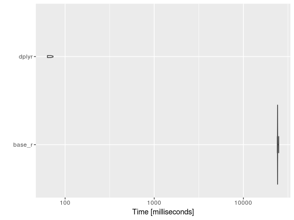

I started using R about a year and a half ago at my summer internship with PNNL, also my current employer. Note: Opinions expressed are solely my own and do not express the views or opinions of my employer.
That paved the way for me to use R for my master’s thesis. Now, I use R for a variety of things. I use python as well, mostly for web scraping currently. Hopefully, that’ll change. But this is more about the evolution of my R knowledge. So let’s get to it.
For the past two years, I’ve created an NCAA stat visualizer. (In the near future I will try to provide predictions for any potential match-up.) The stat visualizer has been handy when filling out brackets. One of the most time intensive processes in this yearly project, is data cleaning and manipulation.
I’ll highlight a handful of useful R tips including, proper list usage, vectorization, tidyverse libraries, and foreach parallelization. I picked these specific topics, as that’s what I’ve found myself using often when coding in R.
Note: The scraped data has four different csvs, individual game (team and player), overall (team and player) data.
List Usage
Let’s start with the proper list usage. Lately, I’ve become a firm believer in using lists when appropriate. The example shown below reads in multiple csvs into a list, and then separate that list into individual data-frames.
I would’ve liked to benchmark this better, but for now I’m just going to time both options.
ptm <- proc.time()
agg.player <- read.csv(file="data/summary_player_data.tsv", sep="\t", header=TRUE, row.names=1, na.strings="?")
agg.team <- read.csv(file="data/summary_team_data.tsv", sep="\t", header=TRUE, row.names=1, na.strings="?")
ind.game <- read.csv(file="data/game_data.tsv", sep="\t", header=TRUE, row.names=1, na.strings="?")
ind.player <- read.csv(file="data/player_data.tsv", sep="\t", header=TRUE, row.names=NULL, na.strings="?")
proc.time() - ptm## user system elapsed
## 1.272 0.008 1.281Let’s take a look at loading all of the csvs into one list.
ptm <- proc.time()
file_lists <- list.files(path="data",pattern="*.tsv")
file_lists <- paste0("data/",file_lists)
file_names <- gsub(".tsv","",file_lists)
my.data <- lapply(file_lists, read.csv,sep="\t", header=TRUE, row.names=NULL, na.strings="?")
names(my.data) <- file_names
list2env(my.data,.GlobalEnv)## <environment: R_GlobalEnv>proc.time() - ptm## user system elapsed
## 1.096 0.012 1.110In this scenario, there is little to no difference in the two options (time-wise). You can load the data any way you want. I prefer the second option, much less typing. :)
Note: The main advantage of a list is that it can be a collection of varying different elements. For example, a list could store two different dataframes and a vector (with differing structures). Lists are vectors in R. However, Lists are recursive in nature while vectors are not. “Recursive” here refers to the fact that it can contain values of different types, lengths, etc.
If you are new to R and trying to learn how the different data types work, here are a few links. Impatient R Tutorials Point Stat Methods SO #1
Per the request of a friend, I’ll follow up with an article focusing on the R data types.
Vectors
R is a vector based language. I didn’t actually know this until I took a class in graduate school, where the professor taught R with a bioinformatics spin. I am very glad I learnt that, and can show you exactly why below.
This time I’ll benchmark our calls. Note, benchmarking essentially runs the code as many times as specified and records timing. This provides a general expected range for how long a chunk of code might take. So let’s take a look.
basicgamestats <- c("fgm", "fga", "three_fgm", "three_fga", "ft", "fta", "pts", "ptsavg", "offreb", "defreb", "totreb", "rebavg", "ast", "to", "stl", "blk", "fouls", "dbldbl", "trpdbl","fgpct", "three_fgpct", "ftpct")
basicgamestats_team <- basicgamestats
mbm = microbenchmark(
s_apply_method = sapply(seq(1:31), function (x){
gen_var_name <- basicgamestats_team[x]
paste0("team_", gen_var_name)}),
vector_method = paste0("team_",basicgamestats_team)
)
autoplot(mbm)
Well, now that I (formally) know that R is a vector based language this piece of code is accomplished quickly. (Note, the sapply loop is the old method (not-vectorized) fashion of appending text.) Instead of searching and appending “team_” to each stat via a loop, the paste0 function takes care of it. For further details on vectorization, take a look here
Alright, lets move forth to the TIDYVERSE! Yep, the more and more I browse stack overflow, answers are provided with a focus on using tidyverse or data.table solutions.
Tidyverse
The tidyverse is a collection of R packages that share common philosophies and are designed to work together, engineered by Hadley Wickham and co. For documentation, go to http://tidyverse.org/. Dplyr is a tidyverse package.
Looking through the data, there are additional columns that need to be created to determine stat percentages among other things. Originally, I didn’t use good programming practice.
Base R - Column adds
ptm <- proc.time()
ind.game$ptsdiff <- ind.game$home_team_pts - ind.game$away_team_pts
# Field goal percentage
ind.game$away_team_fgpct <- ind.game$away_team_fgm/ind.game$away_team_fga
ind.game$home_team_fgpct <- ind.game$home_team_fgm/ind.game$home_team_fga
# Three-point percentage
ind.game$away_team_three_fgpct <- ind.game$away_team_three_fgm/ind.game$away_team_three_fga
ind.game$home_team_three_fgpct <- ind.game$home_team_three_fgm/ind.game$home_team_three_fga
# Free-throw percentage
ind.game$away_team_ftpct <- ind.game$away_team_ft/ind.game$away_team_fta
ind.game$home_team_ftpct <- ind.game$home_team_ft/ind.game$home_team_fta
proc.time() - ptm## user system elapsed
## 0.008 0.000 0.008tidyverse - Column adds
ptm <- proc.time()
ind.game <- ind.game %>% mutate(
ptsdiff = home_team_pts - away_team_pts,
away_team_fgpct = away_team_fgm/away_team_fga,
home_team_fgpct = home_team_fgm/home_team_fga,
away_team_three_fgpct = away_team_three_fgm/away_team_three_fga,
home_team_three_fgpct = home_team_three_fgm/home_team_three_fga,
away_team_ftpct = away_team_ft/away_team_fta,
home_team_ftpct = home_team_ft/home_team_fta
)
proc.time() - ptm## user system elapsed
## 0.004 0.000 0.006When it comes to making new columns. There is no real advantage whether you use base R or tidyverse for this. However, I would argue that it is good programming practice to rely on the using mutate (dplyr) or with (base) when trying to create multiple columns. The with function is helpful as it doesn’t force you to keep referencing data.frame$‘column name’ repeatedly, as seen above.
Here shortly you should see the advantage of using the tidyverse with some of the more complex situations.
base R (sapply) vs. tidyverse
In this example, the goal is to calculate the total number of fouls accrued per player. This is done by searching through each individual game and summing the fouls. After it is calculated it is then appended back to the aggregate player data frame.
Sapply approach: Loop through the aggregate player data-frame, takes the player name and finds all games where the players played and sums the foul column.
Tidyverse approach: Group the per game stats by player names and then sum by the foul column. Dplyr has the same set of join methods seen in SQL. The inner join is used to match and merge the data back based on player names.
tv_mbm = microbenchmark(
base_r = sapply(seq(1:nrow(agg.player)),function(i){
player_subset <- subset(ind.player,ind.player$player_name==agg.player$player_name[i])
return(sum(player_subset$fouls,na.rm=TRUE))
}),
dplyr = ind.player %>% group_by(player_name) %>% summarise(PF = sum(fouls,na.rm=TRUE)) %>% inner_join(agg.player,.)
,times = 10)
autoplot(tv_mbm)
Well, the tidyverse approach is much quicker. Good to know that things are moving along in the right direction.
As you can see, this plot differs a little from the previous violin plot and that is mostly a result of the number of data points. Microbenchmark has a parameter that dictates the number of times a chunk of code is to be repeated. The default is 100, but in this case I have set it 10 (otherwise it would take me an hour to generate the results, YIKES).
Parallel Processing
After doing some reading online, I quickly realized that using foreach loops would have the ability to significantly improve performance.
One of the most time consuming calculations was aggregating season data for both home and away games.
nprl_time <- proc.time()
ind.game.games <- ind.game$game_id
for (variable in seq(along=home_away_vars_to_populate)) {
gen_var_name <- home_away_vars_to_populate[variable]
away_command <- paste0("away_season_", gen_var_name)
home_command <- paste0("home_season_", gen_var_name)
assign(away_command, sapply(seq(1:length(ind.game$game_date)),function(x){
gen_game_id <- ind.game.games[x]
gen_away_team_id <- as.character(ind.game[gen_game_id, ]$away_team_id)
tm_sub <- agg.team[gen_away_team_id,]
tm_sub[,gen_var_name]
}))
assign(home_command, sapply(seq(1:length(ind.game$game_date)),function(x){
gen_game_id <- ind.game.games[x]
gen_home_team_id <- as.character(ind.game[gen_game_id, ]$home_team_id)
tm_sub <- agg.team[gen_home_team_id,]
tm_sub[,gen_var_name]
}))
}
n_prl_time <- proc.time() - nprl_timeSo looking back, this is a pretty inefficient chunk of code. It stores the data into separate vectors, which have to be appended back into the data. A nested sapply loop within a for loop definitely slows things down. Also, if you are interested in using the row names of a data-frame then consider saving it as a separate column.
The advantage of parallelizing code is that the code is split into pieces, executed in parallel and then the results are combined together. There are a a plethora of parallel packages in R. I will post a set of links below, if you are interested in learning more about parallelization in R.
Enough talk, here is the parallel code.
library(parallel)
library(doSNOW)
nocores <- detectCores() - 1
cl <- makeCluster(nocores)
registerDoSNOW(cl)
p_time <- proc.time()
away_var_list <- foreach(i=1:31,.combine=data.frame, .packages = "dplyr") %dopar% {
gen_var_name <- home_away_vars_to_populate[i]
sapply(seq(1:length(ind.game$game_date)),function(x){
gen_away_team_id <- as.character(ind.game$away_team_name[x])
tm_sub <- agg.team %>% filter(team_name == gen_away_team_id)
ifelse(nrow(tm_sub) == 0,-999,tm_sub[,gen_var_name])
})
}
home_var_list <- foreach(i=1:31,.combine=data.frame, .packages = "dplyr") %dopar% {
gen_var_name <- home_away_vars_to_populate[i]
sapply(seq(1:length(ind.game$game_date)),function(x){
gen_home_team_id <- as.character(ind.game$home_team_name[x])
tm_sub <- agg.team %>% filter(team_name == gen_home_team_id)
ifelse(nrow(tm_sub) == 0,-999,tm_sub[,gen_var_name])
})
}
par_time <- proc.time() - p_time
stopCluster(cl)## Regular Code
n_prl_time## user system elapsed
## 979.632 0.128 979.957## Parallel Code
par_time## user system elapsed
## 0.216 0.008 574.619## Code improvement
n_prl_time[3]/par_time[3]## elapsed
## 1.705403For a little insight on the three different times shown, I went to the documentation for proc.time.
As per the documentation: The ‘user time’ is the CPU time charged for the execution of user instructions of the calling process. The ‘system time’ is the CPU time charged for execution by the system on behalf of the calling process.
Elapsed time is easily perceived to the user (i.e when your code is done running), we use it to determine the performance impact from a time standpoint. It’s about 2x times faster. Definitely worth it, in my opinion.
TLDR
So in short, there is a time for base r, tidyverse, and even parallel processing. Hopefully, this post highlighted the performance improvement (from a time standpoint) when used correctly.
I’ve hit on some R packages and features that you will find useful. As you can see, base R does a lot of things well. However when it comes to the harder data munging and cleaning tasks it falls short. At first I thought about using for loops, but quickly learned that I should rely on apply family of loops. Turns out some of the tasks I was trying to accomplish are easily handled by the tidyverse set of packages, specifically dplyr. I was a bit surprised that I had to rely on parallel processing to sort through the data and determine opponent statistics. It proved to be very time efficient and satisfied the computer nerd in me.
I’m sure I will follow this post up again (in a year) detailing some other cool packages and features available in R. Data.table is on the docket of things to learn. Let me know if you have any other recommendations. Tweet at @msubbaiah1.